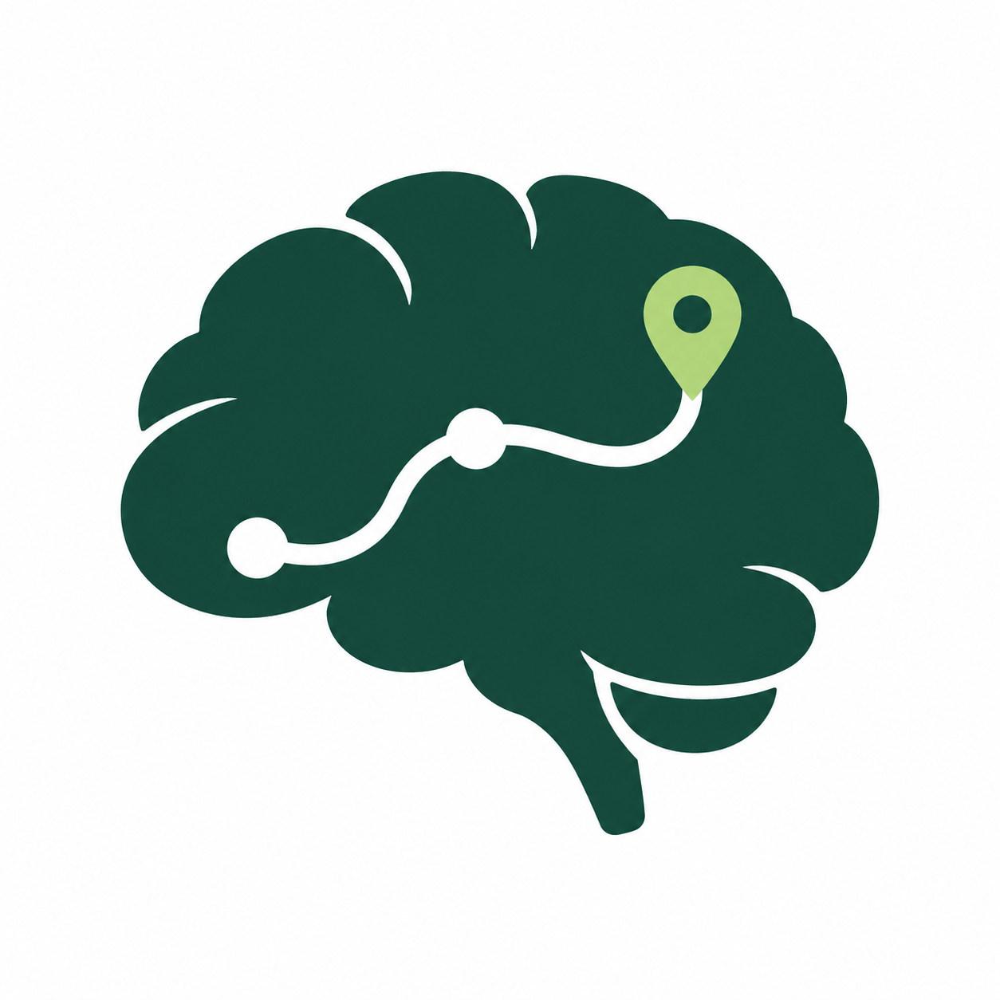

ANATOMICAL VIEW
Encephalon
The 3D view is unavailable. Anatomical reasoning and all findings remain available below.
STRUCTURE INSPECTOR
Choose a structure
Why these regions?
Drag to orbit · scroll / pinch to zoom · click to inspect

NeuroNavNeurological Exam → Brain TopologyEDUCATIONAL PROTOTYPERecognizes supported exam phrases, not diagnoses. Review the matches before applying. Text stays in this page and is not saved.
Paste or type to find matching checkboxes.
Only checked matches are applied. Unmatched text does not imply a normal finding.
3D anatomy. The cortex has 34 Desikan–Killiany gyral parcels per hemisphere. Labels were transferred by exact correspondence on the fsaverage spheres, then assigned to triangles by majority vertex label. Gyral parcels are anatomical units, not individual functional-area or vascular-territory boundaries. Twenty-two additional named structures use the fsaverage segmentation, with full-resolution surface extraction for the deep nuclei and brainstem, including hippocampi, amygdalae, accumbens, thalami, caudate, putamen, pallidum, cerebellum, brainstem, corpus callosum and ventricles. Two unassigned medial-surface pieces preserve the original cortical geometry. Geometry audit · Data provenance and licenses.
Coverage. Midbrain, pons and medulla are not separately segmented. Neither are hypothalamic or thalamic nuclei, pallidal segments, internal capsule, individual tracts, cerebellar vermis, lobules, nuclei or peduncles. These are not approximated with invented boundaries. Ventricles are spatial landmarks and receive no symptom scores. Separating hemispheres is an inspection aid, not anatomical displacement.
Examination references checked 25 September 2026. Categories follow the bedside examination sequence. Reference links accompany each category; current MSD examination chapters were reviewed, including the February 2026 cranial-nerve update and September 2026 meningitis overview. The checklist focuses on findings compatible with brain localization. Face–body sensory patterns follow the MSD sensory-localization reference. Nonlocalizing observations and exclusively spinal or peripheral patterns are omitted. Simple mode selects core domains from the NIH Stroke Scale; it is not the complete scale and does not calculate a score. Consciousness, orientation and command-following items are not included because they do not reliably select a focal region on their own. The full anatomical hierarchy remains available to show competing explanations for shared signs. This is a bounded reference review, not independent clinical validation or an exhaustive review of all recent studies. A 2024 systematic review of degenerative cervical myelopathy signs supports interpreting reflex findings together and investigating suspected cord compression; isolated signs do not establish the cause.
Clinical overlays. Specific signs may suggest a network whose components are displayed as contextual parcels. These are not validated lesion predictions. Contradictory lateralization suppresses detailed highlights. Generic and subtype versions of aphasia or visual-field findings are not counted twice. Selecting an atlas structure never changes the examination findings.
This is a deterministic educational model. Findings contribute transparent, author-defined points to ten anatomical levels. Positive points support a level; negative points oppose it. Ties and conflicting features are retained. These weights have not been clinically validated or calibrated and are not probabilities. Correlated findings may be counted more than once.
Unchecked findings are unknown, not absent. Language dominance is not inferred from handedness. A ranked anatomical level cannot establish etiology, vascular occlusion, or a single-lesion explanation. Peripheral vestibular, autonomic, motor-neuron, multifocal and functional presentations are not comprehensively modeled. Do not use this prototype for patient care.
Reference background: MSD Manual — Weakness and MSD Manual — Aphasia. Examination references: Gait, stance and coordination, Reflexes, and Cerebellar disorders. The scoring weights are original prototype choices, not published clinical criteria.